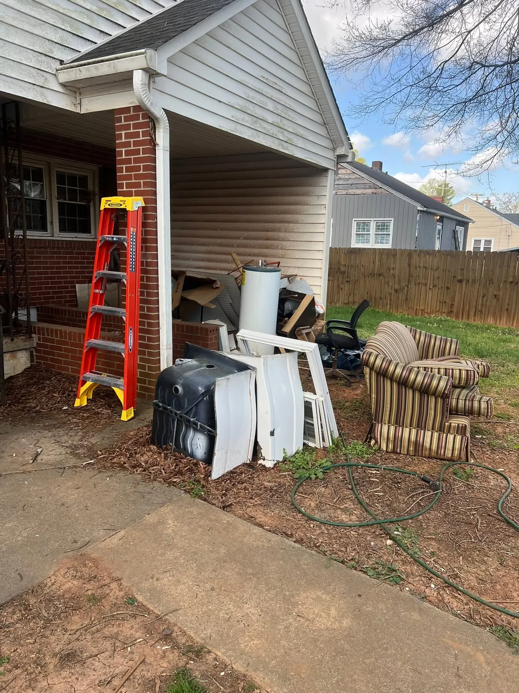
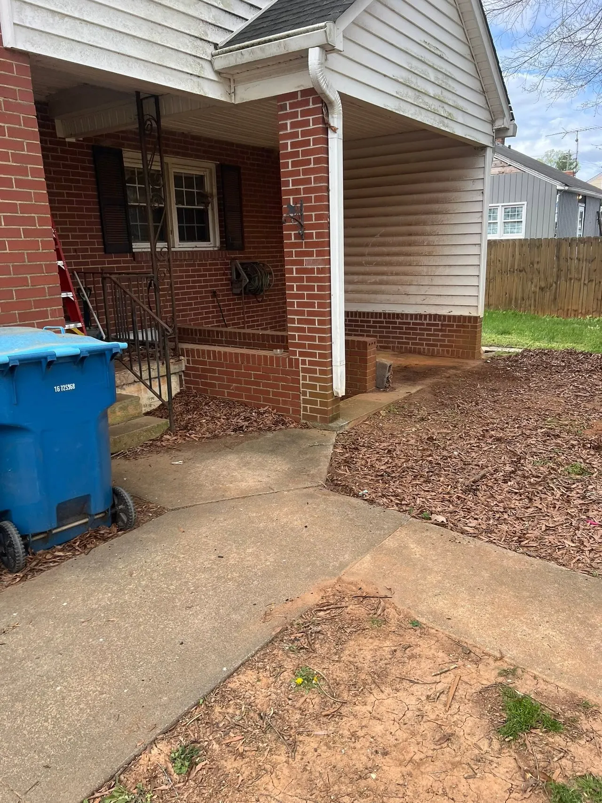
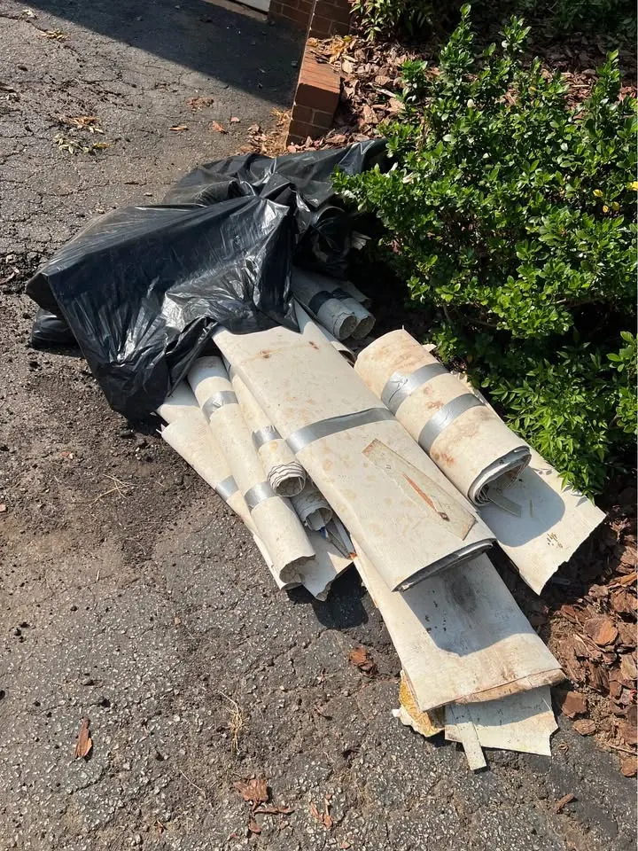
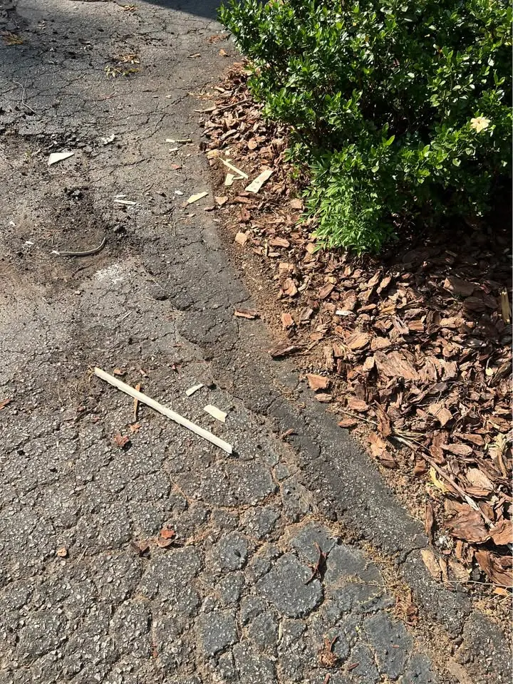

Before and after
Drag the handle to compare.


BeforeAfter
 BeforeAfter
BeforeAfter

BeforeAfter
 BeforeAfter
BeforeAfterDrag the handle to compare.


BeforeAfterBeforeAfter

BeforeAfterBeforeAfterCall or text for a free estimate. Ask about $10 off for first-time customers.